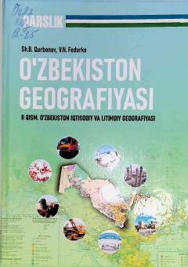

OGO'zbekistonning iqtisodiy va ijtimoiy geografiyasi bo'yicha oliy o'quv yurtlari uchun mo'ljallangan darslik.
Ushbu darslik O'zbekistonning iqtisodiy va ijtimoiy geografiyasiga bag'ishlangan bo'lib, unda respublikaning tabiiy resurslari, aholisi, iqtisodiyot tarmoqlari va hududiy rivojlanish xususiyatlari tizimli yoritilgan. Kitob oliy ta'lim muassasalari talabalari uchun mo'ljallangan bo'lib, iqtisodiy rayonlashtirish va hududlarni rivojlantirish masalalarini qamrab oladi.